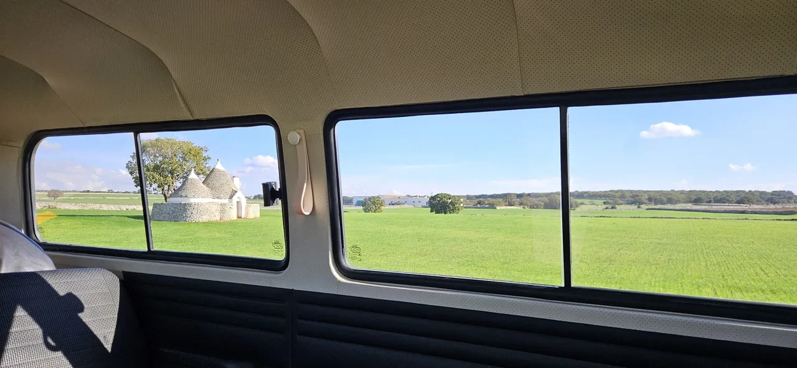

PRIVATE PUGLIA TOURS · ABOARD OUR 1974 VW
Puglia.The scenic way.
A walk through a whitewashed town, a stretch of coast, an olive grove between stops. Our yellow VW comes with a chauffeur and room for up to eight of you. Your job is to look out of the window.
Plan a private tourWe’ll agree the route, timings and price with you.
A FEW GOOD PLACES TO START
Follow a good idea.
Then make it your own.
These routes are starting points. Choose one that catches your eye and we’ll work out the pick-up, stops and timings with you, then send a quote.

01 / 03Three towns.
A very good detour.
Alberobello’s trulli, a wander through Locorotondo and time in Martina Franca. In between, settle back into the VW and watch the Itria Valley go by.
- Alberobello
- Locorotondo
- Martina Franca
There’s a sea view
on the way.
Start among the trulli before heading towards Monopoli and Polignano a Mare. We’ll agree where to stop and how long to spend in each place.
- Alberobello
- Monopoli
- Polignano a Mare
Take another turn.
Try Conversano.
An idea for a trip from Alberobello through Castellana Grotte to Conversano. Ask us about a late-afternoon start if you’d like to explore towards evening.
- Alberobello
- Castellana Grotte
- Conversano
Suggested stops only. We’ll confirm the final itinerary in your quote.

NO ONE ELSE’S SCHEDULE
Just your people.
And a yellow VW.
The bus is reserved for your group, with up to eight passengers and a chauffeur. Tell us where you’re staying and what you’d like to see. We’ll work out a route that fits the day.
Time to stop
We agree the pace and stops before setting off.
Your own group
A private trip for up to eight passengers.
An agreed pick-up
Meeting points and the return are part of the plan.
LET’S PUT A DAY TO IT
When are you
coming to Puglia?
Tell us when, how many of you there are and where you’d like to start. A rough outline is enough to begin with.
You’ll hear from us directly.
Your day out starts here.
Check the details, then open WhatsApp to send us your enquiry.
Open WhatsAppWe’ll reply with availability and a quote.
Your booking is confirmed separately.
BEFORE YOU HOP IN
A few useful details.
How long is the tour?
We agree the duration with you, based on the route and stops you’d like. Your quote sets out the itinerary, expected timings and price.
Can we change the stops?
Absolutely. The routes shown are suggestions. Tell us what you’d like to see and we’ll check the distances and timings before confirming.
What’s included?
Your private trip in the VW, the chauffeur, fuel for the agreed route and the planned stops. Any visits, admission tickets, tastings or meals you request are considered and listed separately in the quote.
How many people can come?
We arrange tours for up to eight passengers, plus the chauffeur. Let us know your group size when you enquire.
You choose the places.
Then claim a window seat.